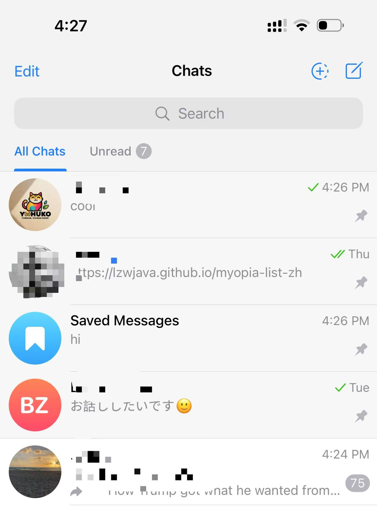

उन्नत Markdown उपयोग | मूल, AI द्वारा अनुवादित
संदर्भ
संदर्भ 1।
फुटनोट्स में, सही पार्सिंग के लिए [संख्या] के बाद एक : जोड़ना याद रखें।
इमेज क्लास
आप Markdown में छवियों को इस तरह क्लासेस लागू कर सकते हैं:
{: .centered }
{: .responsive }
*स्रोत: Telegram*{: .caption }
यह निर्दिष्ट कक्षाओं के साथ छवि को प्रस्तुत करेगा:

स्रोत: Telegram
विषय सूची
परिचय
यहाँ परिचय है।
अध्याय 1
यहाँ पहला अध्याय है।
निष्कर्ष
यहाँ निष्कर्ष है।
मरमेड
graph TD
A[चार्जर बॉक्स] --> B[पावर बैंक]
A --> C[ब्लूटूथ स्पीकर]
A --> D[मोबाइल फोन]
A --> E[इलेक्ट्रिक लैंप]
A --> F[लैपटॉप]
A --> G[स्मार्ट वॉच]
A --> H[क्लाउड सर्वर]
B --> H
C --> H
D --> H
E --> H
F --> H
G --> H
यह अभी भी यहां प्रदर्शित नहीं हुआ है, लेकिन यह अच्छी तरह से काम करता है और Mistral में उत्पन्न किया जा सकता है। आइए कुछ समय निकालकर और अधिक सीखें।
`
-
यहाँ एक है। ↩